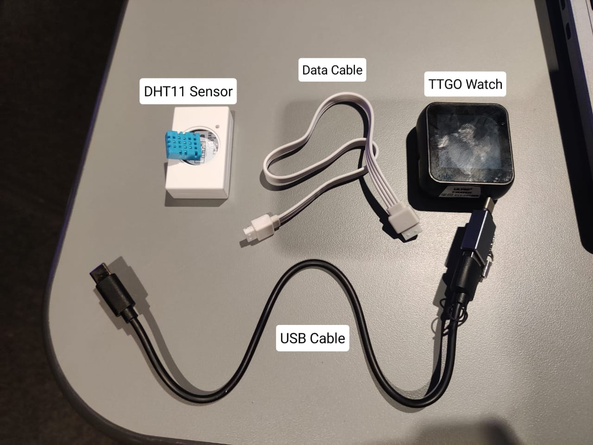
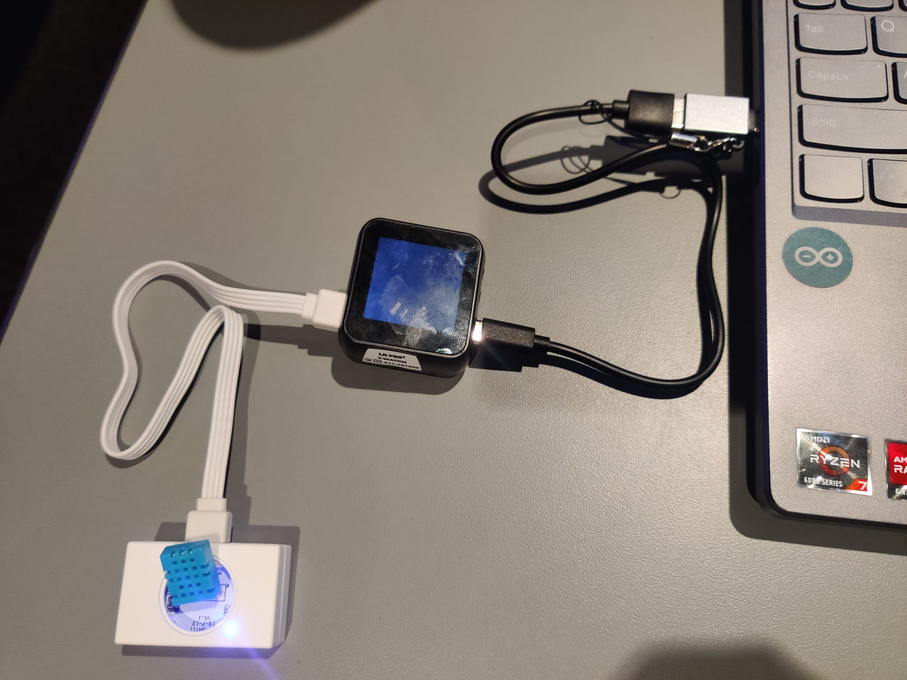

Temperature/Humidity
Step-by-Step Guide: Setting up Temperature and Humidity Monitoring
Hardware Setup:
- Gather parts required: TTGO Watch, DHT11 Sensor Module, USB cable to connect to laptop/computer, cable to connect sensor and watch

- Connect the sensor to the TTGO watch using the GPIO port and the TTGO watch to the laptop using USB cable

ESP32 Code Deployment: 
- Open the ESP32 code provided in the handout with your preferred IDE.

- Modify the WiFi SSID and password in the code to match your network settings.

- Upload the code to the ESP32.

Server Setup on EC2: 
- Log in to your AWS Management Console and navigate to EC2.

- Start your EC2 instance.

- Deploy the server code to your EC2 instance.

Viewing Data on Browser: 
- Open a web browser and navigate to the IP address of your EC2 instance.

- The webpage should display the temperature and humidity readings.